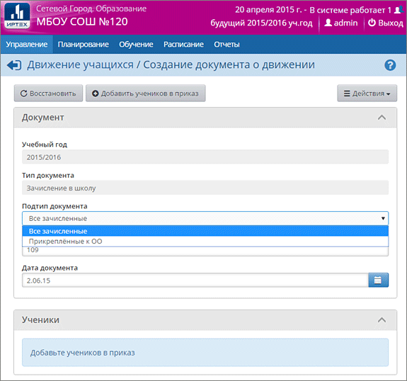

Вам нужно переключиться в новый учебный год (верхняя часть страницы поменяет свой цвет) и перейти в раздел "Движение":

Зачисление учащихся в течение лета
При создании такого документа можно выбрать один из подтипов документа:
| · | Все зачисленные (для зачисления в конкретный класс);
|
| · | Прикреплённые к ОО (см. подробнее о прикреплённых учащихся).
|
Далее необходимо выбрать вариант, откуда будет добавлен ученик:
| 1) из прикреплённых к ОО учеников из этого (будущего) учебного года;
|
| 2) из категории "выпускники и выбывшие";
|
| 3) при помощи ручного (быстрого) ввода;
|
| 4) при помощи импорта;
|
| 5) при помощи расширенного импорта.
|
Выбытие учащихся в течение лета
При выбытии из школы в течение летнего периода, возможны два подтипа:
| · | выбытие зачисленных;
|
| · | выбытие прикреплённых к ОО.
|
Летнее выбытие можно делать только с теми учениками, которые участвуют в документах о Переводе на следующий год и Второгодниках. Если таковых нет, то выводится текст «Нет доступных для выбытия учащихся».
При выбытии указывается класс из будущего учебного года.